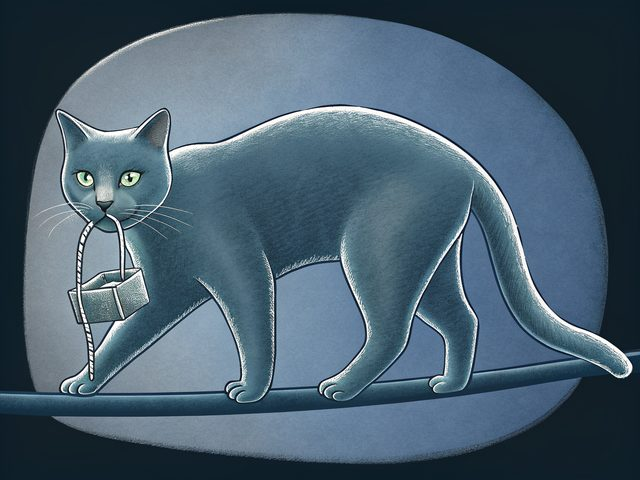

Platform
Build here. Deploy anywhere.
One image is built in the cloud. A machine anywhere dials out, takes the document, and can be asked to collect a report. This page is a design. None of it is built.

Build
The cloud builder will run the image build this project already has. Debian packages. Tools that already have a digest. Today that build runs by hand and the result is a GitHub release on the log.
- One image. A customer system is a node document on that image. The builder does not accept a script, a Dockerfile, or a git URL from an account.
- One digest, every region. A row can name more than one https mirror. The machine checks the digest. A mismatch is refused. A region is a cache, not a second configuration.
- Publish is a separate key.
log:publishappends the row. An ordinary account key cannot.
Deploy
A system is a profile plus the machines enrolled on it. The profile holds the ciphertext. Each machine holds a spoken hostname. The steps are the account, then the service.
-
Compose
Disk, network, access profile, channel, and tools that already have a digest. The browser encrypts. The passphrase stays in that browser.
-
Enroll
A join token, shown once, or a hostname set on the machine. A site with no route uses the JSON bundle on a USB stick.
-
Apply
The machine calls home from wherever it has a route out. A school, a NAT, and a bank use the same client. The platform does not SSH to the box.
Terraform and Ansible call the same API. That contract is on the service page. The providers are not written.
Troubleshoot
The cloud requests a collect. The machine runs a fixed report that shipped with the image. A shell scope and a command field are refused. Break-glass SSH stays the person's own login.
| When | What happens |
|---|---|
| Request | A key with troubleshoot:request opens a job. The reason is behind, decrypt, network, speech, or a short note. The note is not a command. |
| Ask | Speech and large print say blunix: troubleshoot requested for lab-3. Say yes to start.Silence is no. |
| Collect | Digests, the document hash, whether time is synchronized, addresses, and the names of failed units. No journal text. No keys. Cap 64KiB. |
| Done | blunix: troubleshoot finished. Sent the report.A refused job says blunix: troubleshoot refused.An expired job says blunix: troubleshoot expired. |
The report is not public. A quiet profile collects unattended only when that profile allows it, only inside the maintenance window, and only after the clock is synchronized. The default is to ask. The sentences sit with the rest on the service page.
Support
A support package is a key scope on the check-in. It is not a second agent. v1 has no billing. These rows are the offer after a machine can check in and a key can be revoked.
| Package | What a person gets |
|---|---|
| Image | The public log. No view of their machines. |
| Fleet | Many profiles on one account. Which machines are behind. No troubleshoot. |
| Support | Inventory, a collect, and a ticket. The ticket has the spoken sentence and the digests. It does not have the document or the passphrase. |
| Desk | The same collect, plus a person for a USB bundle. The customer types the passphrase. |
The machine never holds a ticket-system token. The API posts the event. Revoke the key and the posts stop. Routes are on the API page.